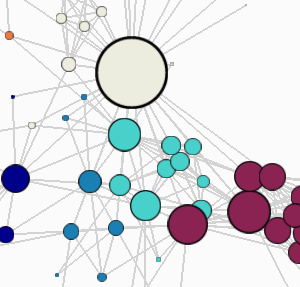
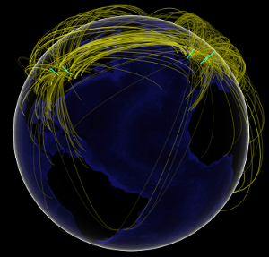
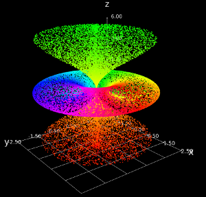
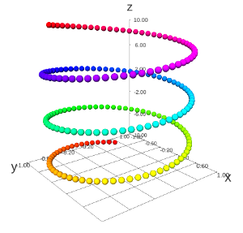
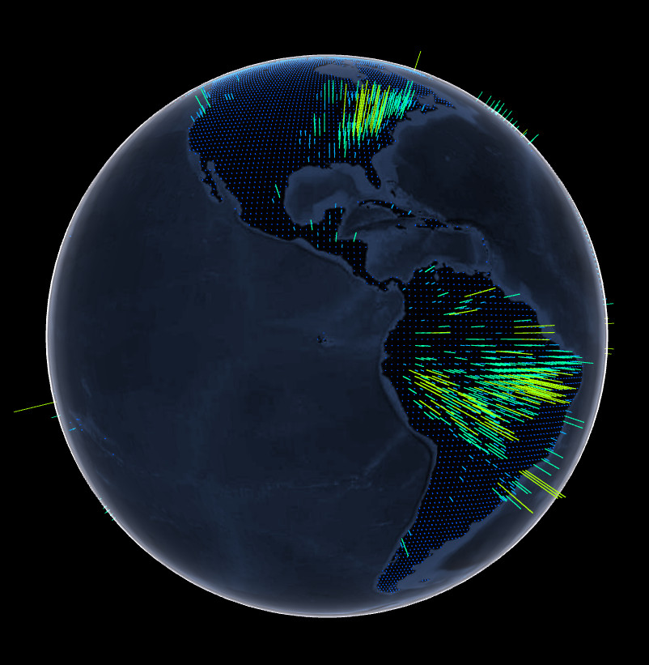
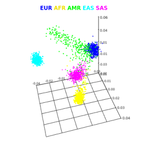
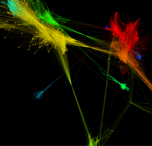
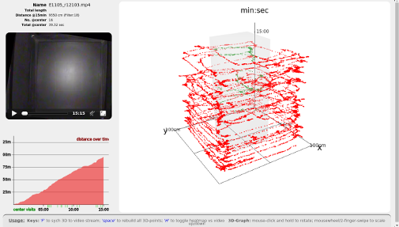

The threejs package provides interactive 3D scatterplots and globe plots using
three.js and the
htmlwidgets package for R. These examples render like normal R plots in RStudio. They also work in R Markdown documents, shiny, and from the R command line.
Gallery of some examples from the package and by users (click to open)








Examples run best in browsers with WebGL enabled.
The maze example (last image) is from Andreas Briese,
https://github.com/AndreasBriese.
Install from CRAN:
install.packages("threejs")
Install the development version of the package directly from GitHub with the devtools package:
devtools::install_github("bwlewis/rthreejs")
More notes on plotting globes